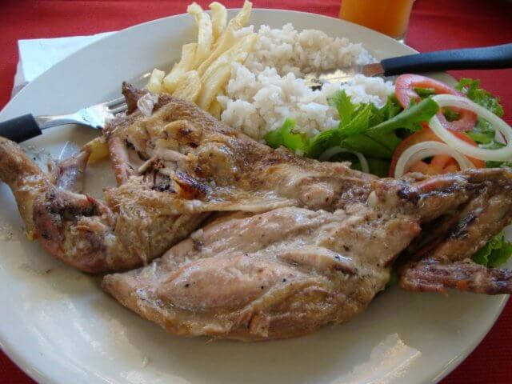

Zambezian Chicken

Description
Chicken Zambeziana is a traditional Mozambican dish, characterized by chicken marinated in coconut milk, garlic and seasonings. The chicken is grilled or slowly roasted, and basted with a mixture of coconut milk and olive oil to enhance the flavor and maintain juiciness. It is lightly flavored with bay leaves and can be finished with piripiri for a spicy touch, resulting in a dish with a tropical flavor and intense aroma, ideal to be served with rice or cassava.
Ingredients
- 1 Chicken
- 1 grated coconut
- 1/2 cup of hot water
- 1/2 cup of cold water
- 4 cloves of garlic
- Salt to taste
- 1 bay leaf
- Olive oil(approximately 1 tablespoon)
- Piripiri (optional, to taste)
Steps
- Chicken Preparation: Wash the chicken and let it drain well. Cut it into pieces if you prefer.
- Coconut Milk Preparation: Grate the coconut into a large container.
Add half a cup of hot water and half a cup of cold water to the grated coconut. Mix well until you obtain a creamy coconut milk.
Let the coconut milk cool.
- Seasoning Preparation: Chop the garlic with salt in a mortar until it forms a paste.
Season the chicken with this garlic and salt paste.
Place the seasoned chicken on a tray and add the bay leaf.
- Marinade: Drizzle the chicken with half of the prepared coconut milk. Let the chicken marinate for approximately 30 minutes to absorb the flavor well.
- Preparation for Baking/Grilling: In a separate bowl, mix the other half of the coconut milk with a spoonful of olive oil. If you want a spicy flavor, add a little chilli to this mixture.
- Roasting the Chicken: Roast the chicken slowly in the oven or grill over medium heat, basting periodically with the coconut milk and olive oil mixture.
Continue basting until the chicken is golden, cooked through and has a juicy texture.
- Service: Serve the chicken Zambeziana while still hot, accompanied by white rice or cassava, depending on your preference.